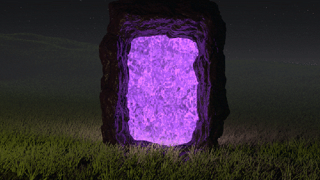
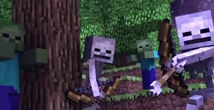
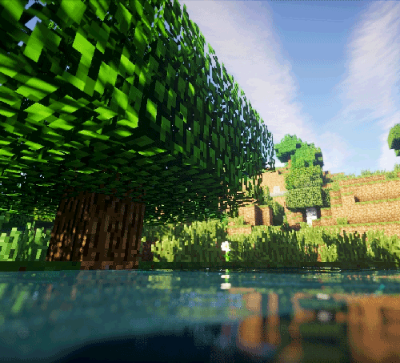
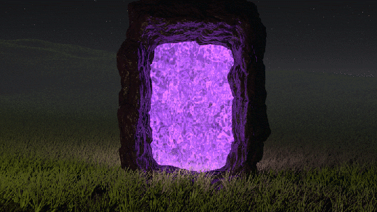
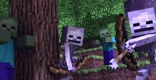
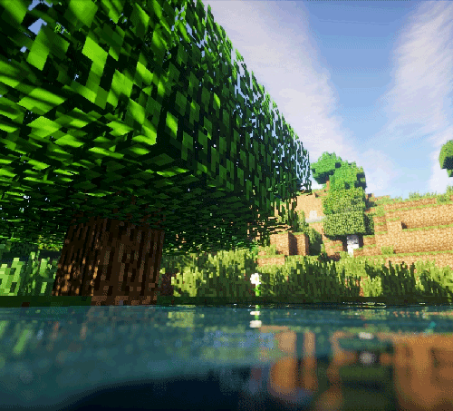

MineC r af t Java edition
Minecraft (от англ. mine «шахта; добывать» + craft «ремесло») — компьютерная инди-игра в жанре песочницы, разработанная шведским программистом Маркусом Перссоном и выпущенная его компанией Mojang AB. Перссон опубликовал начальную версию игры в 2009 году; в конце 2011 года была выпущена стабильная версия для ПК Microsoft Windows, распространявшаяся через официальный сайт. В последующие годы Minecraft была портирована на Linux и macOS для персональных компьютеров; на Android, iOS и Windows Phone для мобильных устройств; на игровые приставки PlayStation 4, Vita, VR, Xbox One, Nintendo 3DS, Switch и Wii U. В 2014 году Microsoft приобрела Mojang AB и права на Minecraft за 2,5 миллиарда $. 4J Studios (англ.)русск. портировала игру на игровые приставки, а Xbox Game Studios разработала мультиплатформенную версию Minecraft и специальное издание игры для образовательных учреждений[⇨]. Перссон написал Minecraft на Java с использованием библиотеки графического вывода LWJGL, черпая идеи из таких игр, как Dwarf Fortress, Dungeon Keeper и Infiniminer (англ.)русск.[⇨]. Minecraft даёт в распоряжение игрока процедурно генерируемый и изменяемый трёхмерный мир, полностью состоящий из кубов — его можно свободно перестраивать, создавая из этих кубов сложные сооружения — эта особенность делает игру схожей с конструктором LEGO. Minecraft не ставит перед игроком каких-либо конкретных целей, но предлагает ему свободу действий: например, игрок может исследовать мир, добывать полезные ископаемые, сражаться с противниками и многое другое[⇨]. Игра включает в себя дополнительные режимы, например, «выживание», где игроку нужно самому добывать ресурсы, и «творчество», где у игрока эти ресурсы есть в неограниченном количестве[⇨]. Механика «редстоуна» (англ. Redstone) позволяет создавать в игре сложные логические схемы — тем самым игра может служить виртуальным конструктором для программистов и инженеров[⇨]. Minecraft получила всеобщее признание среди игровой прессы и множество наград. Критики выделили такие основные достоинства, как реиграбельность, минималистичный дизайн, динамичный саундтрек и необыкновенную свободу творчества, ограниченную лишь фантазией игрока; недостатками они посчитали наличие недоработанных предметов и сложности с созданием сетевой игры, а также отсутствие в игре режима обучения. Разработчики устранили эти недостатки в последующие годы[⇨]. На лето 2020 года было продано более 200 миллионов копий на всех платформах, что делает Minecraft самой продаваемой игрой в истории (англ.)русск., и 132 миллиона игроков запускали игру хотя бы раз в месяц[⇨]. В популяризации и коммерческом успехе Minecraft большую роль сыграли пользовательский контент, в том числе видеоролики, распространяемые через YouTube, и множество сторонних модификаций[⇨]. В разные годы был выпущен ряд побочных игр, в том числе Minecraft: Story Mode[⇨], Minecraft Earth и Minecraft Dungeons.


 





Меню Mojang